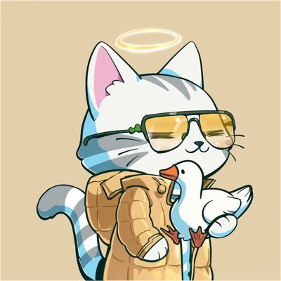
面壁者研究院註冊到出金、手續費明細、BP Token 與美股機制一次講透——這一次，你買到的是受法律保護的真實股票。
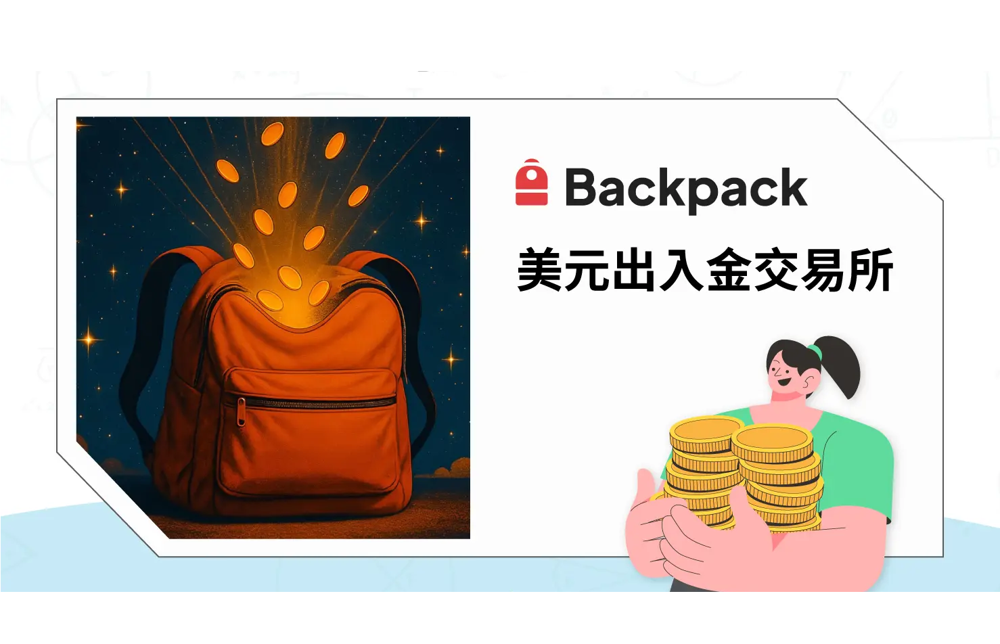
Backpack Exchange 的創辦團隊來頭不小——FTX 前法律總顧問 Can Sun，搭配 Solana 生態的核心開發者 Armani Ferrante。他們把 FTX 崩盤的教訓刻進產品基因，從一開始就把合規與資產透明擺在最前面。發展到今天，Backpack 早已不只是一間加密貨幣交易所，產品線一路覆蓋現貨、永續合約、質押、Card 到各類收益商品。
其中最受市場關注的一步，就是美股交易的正式登場：Backpack Securities 讓你在同一個帳戶裡直接買進「真實的美股」，而不是合成資產或代幣化包裝。本文就從美股這條主線講起，再把註冊、出金、手續費與 BP Token 一併整理清楚。
🎉 限時活動：2026 年 6 月 30 日前美股交易 0 手續費
Backpack Securities 把美股與 ETF 的交易，架在受美國監管的券商基礎設施之上。最關鍵的差別在於：你拿到手的是貨真價實的股票，而非合成資產，也不是代幣化包裝。持股以 security entitlement（證券權益）的形式存在，受紐約州 UCC Article 8 保障，套用的是與 Robinhood、Vanguard、Charles Schwab 同一套法律框架——靠的是法律，而不是一紙合約。
體驗層面更值得一提：股票、加密資產、穩定幣、收益產品全都收進同一個 Backpack 帳戶裡運作，再也不用在券商、交易所、錢包之間反覆搬資金。
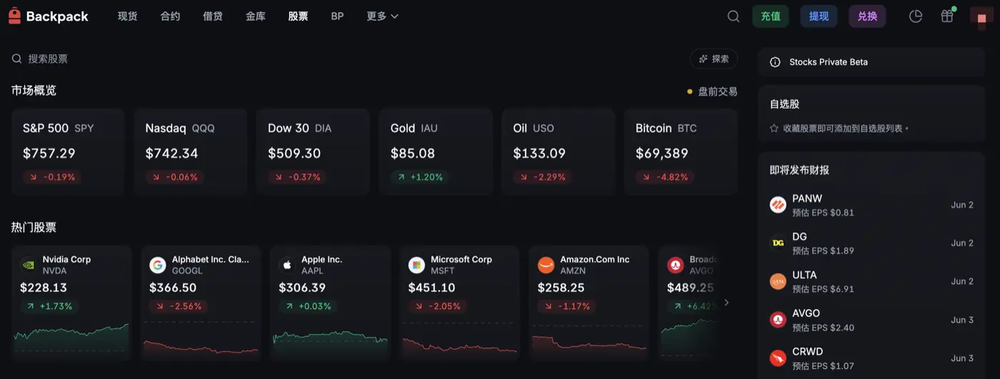
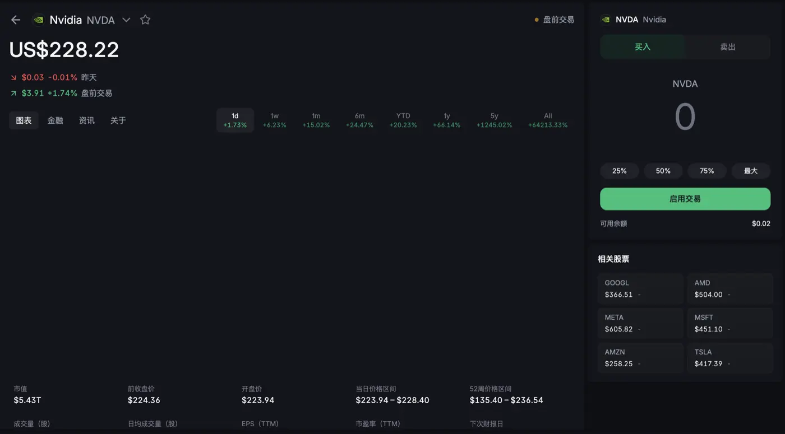
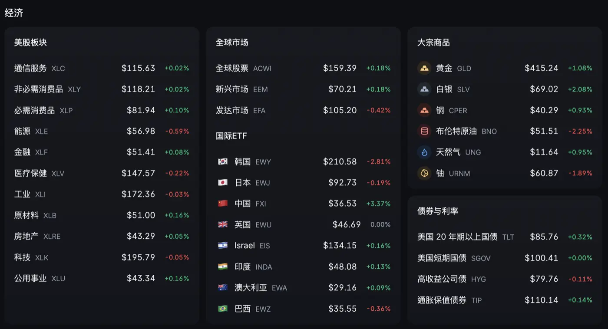
未來，真實股權可 1:1 轉換成鏈上代幣化證券，反向同樣行得通。首批代幣化證券會率先登陸 Solana，並與各類錢包、DeFi 應用相容。換句話說，你可以先「持有受法律保護的真實股票」，等需要時再把它轉成能進 DeFi 的鏈上資產——兩種型態之間任你切換。
市面上不少打著「美股」名號的產品，骨子裡其實是合成資產或代幣化包裝：價格跟著股價跑，但你買到的並不是真正的股票——沒有 security entitlement、領不到現金股息、也參與不了公司行動。在法律定位上，這類產品更接近對發行方的無擔保債權，發行方一旦出事，你只能排隊求償。代幣化美股各有其適用場景，但本質上和「直接持有股票」是兩回事。
Backpack 走的是另一條路：建立在受美國監管的券商基礎設施上，你持有的就是股票本體，受紐約州法保障，並與平台資產法律隔離。再加上加密帳戶與美股帳戶本就同一個，USDC 不必搬家，穩定幣可從 15+ 條鏈入金、24／7 到帳，省去銀行電匯這類傳統流程；未來更將支援以 BTC、SOL 等加密資產直接抵押借 USD 買股票（即將推出，以官方公告為準）。
透過傳統管道買美股，痛點往往一籮筐：銀行匯款得等 1 至 3 天、複委託手續費 0.15% 至 1%、只能在美東交易時段下單、閒置美元一毛利息都沒有，股票還跟其他資產散落在不同帳戶。
Backpack 把這些麻煩一次掃掉：穩定幣入金即時到帳、一週五天全天可交易、閒置 USD 最高約 3.95% APY、股票與加密資產集中管理。法律保障也與傳統美國券商看齊，同樣走 SEC、FINRA、SIPC 框架與 UCC Article 8 保護。依官方說明，平台還接受持中國護照者開戶（需海外居住證明），對華語區用戶來說，門檻比許多主流券商來得友善。
| 項目 | 說明 |
|---|---|
| 可交易品項 | 1,000+ 檔美股、ETF、商品、固定收益、國際 ETF（依官方為準） |
| 交易時段 | 24／5（週一至週五，全天 24 小時） |
| USD 收益 | 最高約 3.95% APY（浮動），VIP 最高約 6.95% |
| 加密收益 | SOL 最高約 4.8% APY、MON 最高約 10% APY（均為浮動） |
| 穩定幣入金 | 15+ 條區塊鏈網路 |
| 法律框架 | 紐約州 UCC Article 8／SEC／FINRA／SIPC |
| 合規牌照 | 杜拜 VARA、歐洲 MiFID II、美國 FinCEN MSB |
| 資產透明度 | 每日儲備證明（PoR），由 OtterSec 獨立驗證 |
| 資產自管 | 加密資產可隨時提取至 Backpack Wallet 自行保管 |
| 領導團隊 | Backpack US 總裁 Mark Wetjen（前 CFTC 代理主席） |
Backpack 的起點，是 Solana 框架開發商 Coral 在 2022 年完成 2000 萬美元募資後推出的加密貨幣錢包。2023 年 11 月，團隊進一步宣布推出受監管的 Backpack Exchange，並順利拿下杜拜虛擬資產監管局（VARA）許可。靈魂人物包括前 FTX 法律總顧問 Can Sun 與執行長 Armani Ferrante，定位很明確——在 FTX 之後，做一個更安全、更透明的交易平台。
而 Backpack 的野心，顯然不止於一間交易所。它瞄準的是整合銀行、儲蓄、投資、合約、股票、卡片與鏈上操作的金融 App，對標的更像韓國國民級應用 Upbit，而非單純的合約平台。
Backpack 的平台代幣 BP，已於 2026 年 3 月 23 日在 Solana 鏈上完成代幣生成事件（TGE），總供應量 10 億枚。其中 25%（2.5 億枚）以空投形式發放給積分計畫參與者與 Mad Lads NFT 持有者，這也是先前積分計畫的最後一輪回饋。
特別值得一提的是，BP 在發行初期完全沒有內部人分配，這跟多數交易所代幣的做法很不一樣。剩下的 75% 走鎖定機制：其中 37.5% 依營運里程碑（例如市場擴張、新產品上線）分階段解鎖，另外 37.5% 則封存於公司國庫，要等到潛在 IPO 之後才會釋出。
Backpack 推出的「美元等價池」服務，讓 USDC 等穩定幣在閒置時也能持續生息，把 web2 與 web3 的金融體驗縫合在一起。當你把穩定幣借出去，收益會同時來自美國國債與平台借貸利率，形成雙重收益結構。
就目前數字來看，USD 最高約 3.95% APY，VIP 用戶最高約 6.95% APY；加密資產這一側，SOL 最高約 4.8% APY、MON 最高約 10% APY。以上全為浮動利率，實際數字會隨市場狀況波動，建議以平台即時公告為準。最實用的一點是：這些生息資產能同時拿來當交易與買股的保證金，不必在「賺利息」和「留著交易」之間二選一。
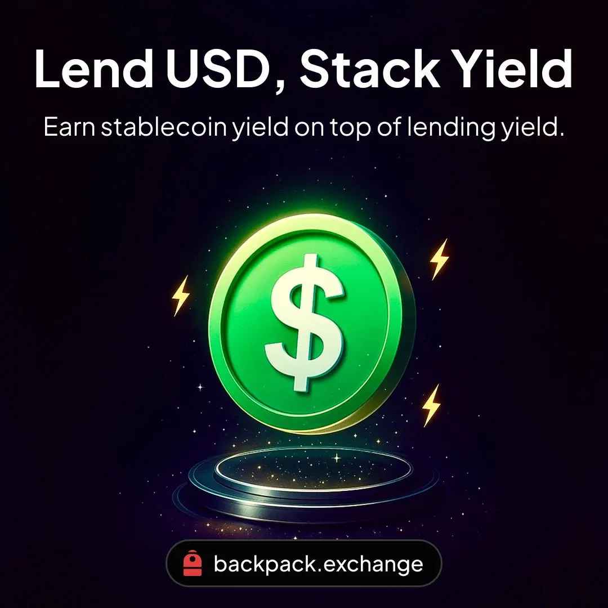
Backpack 支援法幣出金，用戶可以把美元直接提領到自己的銀行帳戶。流程也不複雜：只要持有 USDC，再填好受款銀行的資訊，就能透過電匯收取美金。
以對加密貨幣相當友善的 LINE BANK 為例，只要先開立美元外幣帳戶，把 LINE BANK 的 SWIFT CODE、帳號等資訊輸入完整，就能開始電匯。
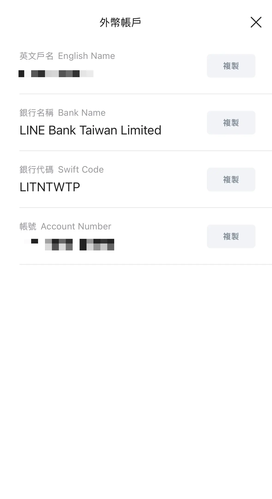
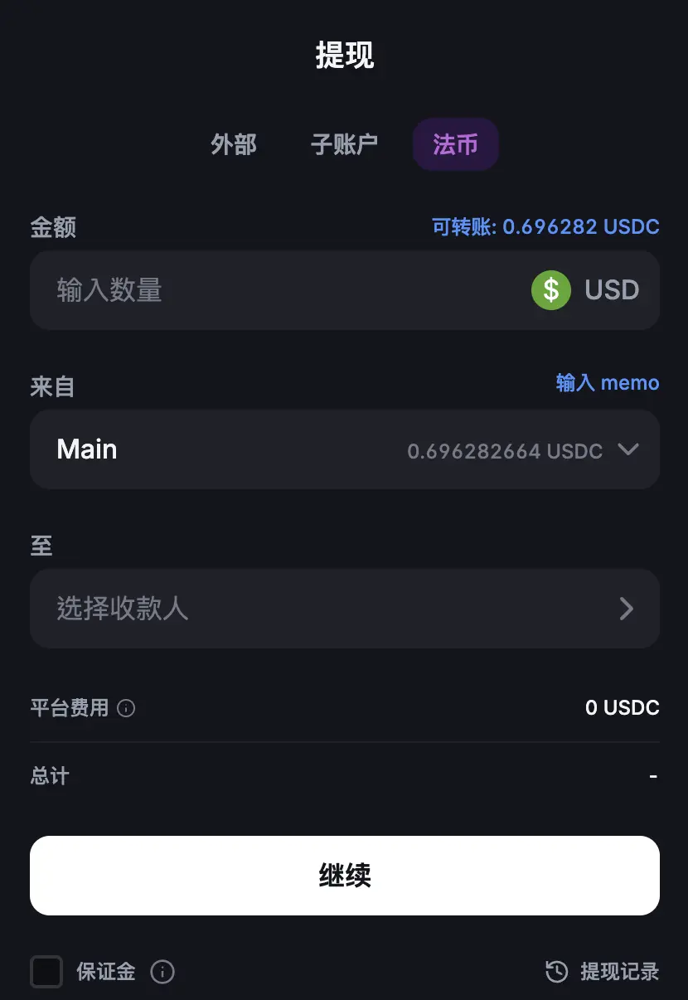
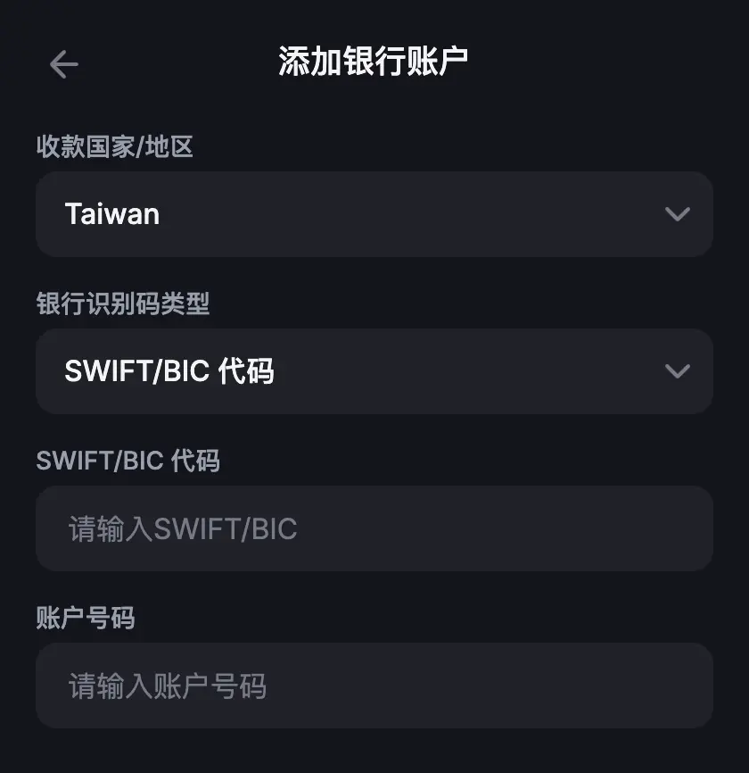
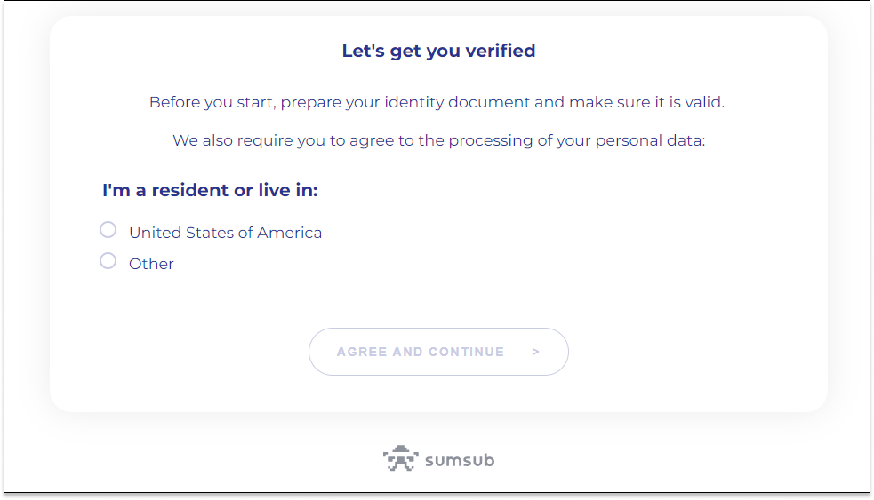
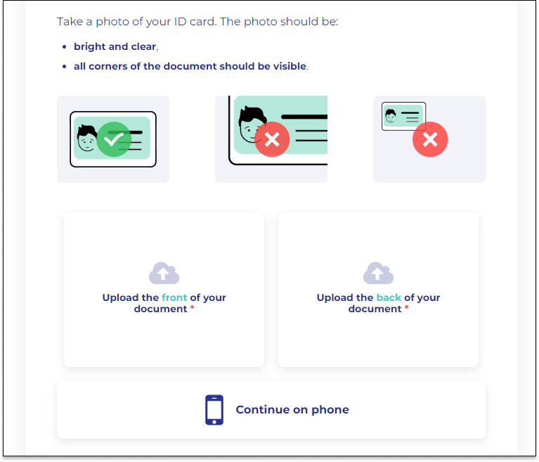
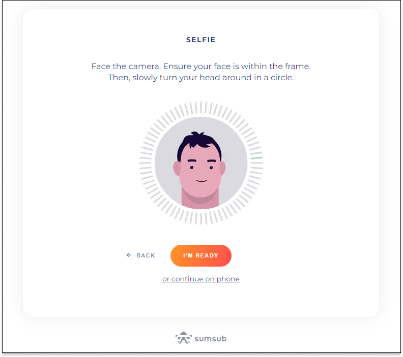
Backpack 交易所依 30 天內的交易量級距，給出不同的手續費率。
手續費用表格（依官方最新公告為準）
| 等級 | 現貨（Spot） | 衍生品（Derivatives） | ||||
|---|---|---|---|---|---|---|
| 30日交易量 | 掛單費 | 吃單費 | 30日交易量 | 掛單費 | 吃單費 | |
| 一般 | — | 0.08% | 0.10% | — | 0.02% | 0.050% |
| $100,000 | 0.07% | 0.09% | $500,000 | 0.019% | 0.045% | |
| $500,000 | 0.06% | 0.08% | $1,000,000 | 0.018% | 0.040% | |
| $1,000,000 | 0.05% | 0.07% | $5,000,000 | 0.016% | 0.035% | |
| $5,000,000 | 0.04% | 0.06% | $10,000,000 | 0.013% | 0.030% | |
| $10,000,000 | 0.03% | 0.05% | $12,500,000 | 0.010% | 0.028% | |
| VIP1 | $15,000,000 | 0.02% | 0.045% | $25,000,000 | 0.010% | 0.026% |
| VIP2 | $25,000,000 | 0.00% | 0.04% | $50,000,000 | 0.000% | 0.024% |
| VIP3 | $50,000,000 | 0.00% | 0.035% | $75,000,000 | 0.000% | 0.022% |
| VIP4 | $75,000,000 | 0.00% | 0.03% | $100,000,000 | 0.000% | 0.020% |
| VIP5 | $100,000,000 | 0.00% | 0.025% | $150,000,000 | 0.000% | 0.018% |
提領手續費會隨幣種與所選的區塊鏈網路而不同。充值（入金）完全免手續費，Backpack 帳戶之間的內部轉帳同樣分文不收。
| 幣種 | 網路 | 提領手續費 |
|---|---|---|
| BTC | Bitcoin | 0.000015 BTC |
| BTC | Solana | 0.000009 BTC |
| ETH | Ethereum | 0.00143 ETH |
| ETH | Arbitrum | 0.00024 ETH |
| ETH | Base | 0.00024 ETH |
| ETH | Optimism | 0.00005 ETH |
| SOL | Solana | 0.008 SOL |
| USDC | Solana | 0.6 USDC |
| USDC | Ethereum | 3 USDC |
| USDC | Arbitrum | 0.5 USDC |
| USDC | Base | 0.5 USDC |
| USDC | Optimism | 0.1 USDC |
| USDC | Polygon | 0.1 USDC |
| USDC | Sui | 0.1 USDC |
| USDC | Aptos | 0.1 USDC |
| USDT | Solana | 0.6 USDT |
| USDT | Ethereum | 3 USDT |
| USDT | Tron | 0.5 USDT |
| USDT | BSC | 0.5 USDT |
| USDT | Arbitrum | 0.5 USDT |
| USDT | Optimism | 0.1 USDT |
| USDT | Polygon | 0.1 USDT |
| XRP | XRP Ledger | 0.2 XRP |
| DOGE | Dogecoin | 6 DOGE |
| SUI | Sui | 0.2 SUI |
| APT | Aptos | 0.2 APT |
| BNB | BSC | 0.0009 BNB |
另外有一點值得留意：USDT/USDC 交易對享有 0% 手續費，很適合需要在穩定幣之間切換的用戶。提領的處理時間一般落在數分鐘到一小時，實際快慢視網路壅塞程度而定。
Backpack Exchange 的設計核心，圍繞「自我保管」與多方計算（MPC）來強化用戶錢包安全，讓用戶對自己的資產握有更多掌控與可見度，同時降低資金集中控制的風險——這正是 FTX 事件之後最被看重的一環。目前主要特色如下：
Backpack 自 2023 年底營運至今已超過一年，從現貨、出金、永續合約一路擴展到美股，是目前少數同時補齊「合規、透明、產品深度」的交易所。當然，任何平台都有風險，建議資金分散配置、開啟兩步驟驗證，並善用自託管功能。
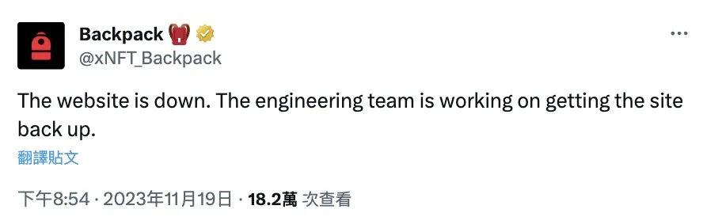
是。Backpack Securities 透過受美國監管的券商基礎設施，讓你持有真實美股與 ETF，以 security entitlement 形式存在，受紐約州 UCC Article 8 保護，與 Robinhood、Charles Schwab 適用同一套法律框架，並非合成資產或代幣化包裝。
可以。你持有的是真實股權，能領現金股息，並自動跟進股票分割、合併、分拆等公司行動，也支援 ACATS／DTCC 從其他美國券商轉倉。
不用。已完成 KYC 的現有用戶可直接啟用美股功能，登入後在「股票」分頁就能開始交易。
一週五天、每天 24 小時皆可交易（24／5），不受美東 9:30 至 16:00 傳統交易時段限制。
Backpack 不為以下國家和地區的居民提供服務：
以下國家或地區目前暫不提供服務，但仍在努力中：
Backpack Exchange 內建自我託管的加密錢包，讓用戶能掌控自己的資金，並透過多方計算與每日由 OtterSec 驗證的儲備證明（PoR）強化安全性，防止交易所單方面動用用戶資產。
若在 Backpack Exchange 上遇到問題，可直接寄信到 support@backpack.exchange，官方會盡力在 24 小時內回覆所有客戶詢問。